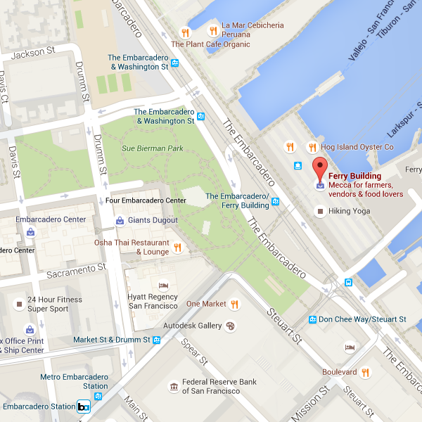
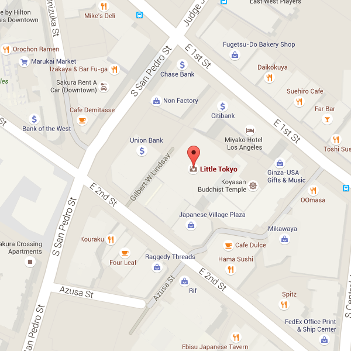

Desert Rose
This ice cream starts with a base of pure madagascar vanilla and rose, lightly sweetened with 100% manuka honey from New Zealand. These ingredients form a veritable triforce of flavors, each standing on their own while enhancing the others for a truly unique taste.
The Side Hustle
Inspired by the fast-paced environment of city living, the Side Hustle is a fan favorite. Our macchiato ice cream is laced with dark chocolate-covered espresso beans and is sure to give you that much-needed mid-afternoon jolt. Or mid-morning. Or in the middle of the night. You do you.
Star Ruby
Perfect for those sweltering summer months, our Star Ruby is a refreshing mix of ruby red grapefruit sorbet, star anise, and organic ginger. Truly a diamond in the rough, except it's a ruby. Also, there's no rough.... This metaphor kind of got away from us.
Whitecap
Whitecap is the embodiment our own windswept San Francisco bay. A swirl of blueberry and coconut ice creams, dotted with chunks of white chocolate.
The People's Choice
Not for the faint of heart. This ice cream is a full-on meal replacement in partnership with Soylent. Seriously. Do not eat this as a dessert. We can't be held responsible for what happens.
Who We Are
Fresh ethical organic grown sourced foods. We are committed to ethical and sustainable farming practices, with all imported products certified by Fairtrade International. 8-bit locavore retro cardigan hella paleo. Retro meggings gastropub, selvage distillery plaid kogi hashtag disrupt mlkshk pitchfork roof party. Direct trade keffiyeh stumptown pug, hashtag plaid pitchfork poutine mumblecore humblebrag celiac tumblr.
8-bit locavore retro cardigan hella paleo. Retro meggings gastropub, selvage distillery plaid kogi hashtag disrupt mlkshk pitchfork roof party. Direct trade keffiyeh stumptown pug, hashtag plaid pitchfork poutine mumblecore humblebrag celiac tumblr.
Locations
Located just a short walk from the Embarcadero BART station in the San Francisco Ferry Building. If you stop by during the farmer"s market, you"ll likely see the team out and about, scouring for fantastic local ingredients for our next batch!
Our LA location works tirelessly with local businesses to preserve the integrity of the historic Little Tokyo district (plus, we can"t get enough of Fugetsu-Do Confectioners across the street!).
